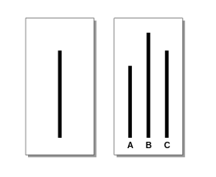

Experience de Asch
L'expérience de Ash est un classique, elle cherche à démontrer l'influence que peut avoir un groupe sur un individu. En effet dans la vie quotidienne ils arrivent régulièrement que l'on se mette à suivre le mouvement d'un groupe comme par exemple dans une gare lorsque un amas de gens cours en direction d'un rer, on estime que si ils courent c'est sûrement qu'il va falloir courir si l'on ne veut pas louper le rer, et c'est ainsi que l'on se met également à courir. Cela peut aussi s'observer dans des files d'attentes, ou lorsque des personnes attendent devant une porte et que l'on pense qu'on ne peut pas rentrer. C'est alors que cette expérience va montrer le pouvoir du conformisme sur les décisions d'un individu au sein d'un groupe.
Protocole
Pour démontrer le pouvoir du conformisme, Asch a invité un groupe d'étudiants a passé un "test de vision", cependant tous les personnages étaient complices hormis un seul réel cobaye pour voir comment le choix des autres l'influenceraient.  C'est ainsi qu'on demande à chacun de choisir la longueur entre A, B et C qui correspond à la longueur que l'on cherche, dans l'exemple ci dessus c'est C. Au début de l'expérience, les complices donnaient la bonne réponse, ce n'est qu'à partir du 7ème test, qu'ils donnèrent unanimement la même fausse réponse. Le cobaye était l'avant-dernier à répondre, et s'il a pu être surpris du choix de ses camarades, au fur et à mesure, il finit par devenir de plus en plus hésitant quand à ces réponses (alors que le test est simple). Par la suite il recommençait l'expérience avec cette fois-ci seulement un complice, qui affirmer d'une voix ferme ses réponses alors qu'elles étaient fausses pour voir l'influence qu'il aurait sur les autres sujets.Résultats et Impacts
Finalement, Asch a pu étudier l'influence qu'avaient les réponses du groupe sur les individus, autrement dit, le pouvoir du conformisme sur les décisions d'un individu au sein d'un groupe. Les résultats ont montré que la plupart des sujets avaient répondu correctement sans influence extérieur, mais cependant ils se conforment sur 36.8% des mauvaises réponses soutenus à l'unanimité par le ou les complice, 75% des sujets se sont conformés au moins une fois.Les sujets pouvaient même être amenés à répondre des réponses allant contre leur évidence ou leur propre vue avec des longueurs ayant un écart de plus de 5cm. Après l'expérience certains individus indiquaient qu'ils s'était simplement trompé car ils ont une "mauvaise vue", ils se déchargent alors de toutes responsabilités de leurs décisions et actes. Cette expérience a donc montré qu'un groupe pouvaient avoir une influence sur des individus, cela se retrouve aujourd'hui dans des systèmes de notations (google, tripadvisor ...), ou naturellement on aura tendance à choisir ce que la masse de gens ont bien noté.Chercheur et lien pour en savoir plus: